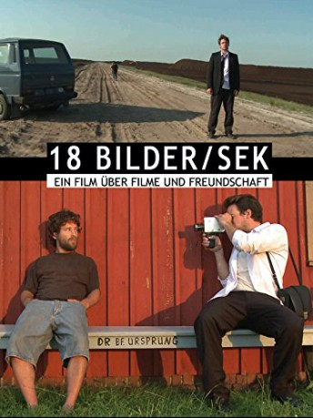

#5799 18 Bilder/Sek
 
 IMDB-Wertung: 6.6 / 10
IMDB-Wertung: 6.6 / 10  Metascore: 0
Metascore: 0 
Ein Roadmovie über Freundschaft, die Suche nach sich selbst, das Surren einer Kamera, das Rattern eines Projektors und das Gefühl, genau das Richtige zu tun. Ein Film, der zeigt, dass man glücklich werden kann. Einfach so - ohne dass einen der Blitz treffen oder man irgendwas Besonderes erleben muss.
Jahr: 2010
Dauer: 101 Minuten
FSK:
Land: Deutschland Studio: 18 FramesTonspuren:
Untertitel:
Auflösung: 1080p (1920x1032) Größe: 4997 MB
Genre: Drama
Regisseur: Tobias Greber
Drehbuch: Sylvain Estibal
Soundtrack:
Darsteller:
- Nepomuc von Kornmann als Finn
- Alexander Frank Zieglarski als Andreas
Datei: X:\2010(A-F)\18 BilderSek (2010, FSK, 1920x1032).mkv seit 22.03.2017
Festplatte: HD 2009(G-Z)-2010(A-F)
 Es gibt insgesamt 95 Filme in der Gruppe '2010(A-F)'
Es gibt insgesamt 95 Filme in der Gruppe '2010(A-F)'